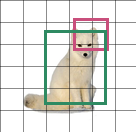

Between data
and decisions.
A model begins with a choice about what to observe. Its consequences depend on what we choose to do with what it learns.
Four studies. Four places. A closer look at the choices
between what a model learns and what the world needs.
Preparing your view of the world…
The reading route moves from predicting financial conditions to checking evidence, learning market policies, and measuring the resources used by AI.
Begin in Singapore ↓Fossil Fuel Prices and Capital Cost: A Machine Learning Driven Study on Energy Transition
Financing the
energy transition.
The first study asks how fuel-price scenarios relate to the cost of financing energy projects. The target is WACC, the weighted average cost of capital: a financial condition that can change even when the technology stays the same.
What does capital cost
change for a solar project?
Find the constant electricity price that makes discounted revenue equal discounted costs. Explore how financing, solar resource and operating life change that price.
The same plant. A different cost of waiting.
Real LCOE ($/MWh) vs. real discount rate · discounted cash-flow modelHow do rate and lifetime interact?
Real LCOE · select a cell to use its assumptions.÷ [∑ Eₜ / (1 + r)ᵗ]
End-of-year flows; constant real O&M. The 8% rate is an editable scenario. Taxes, incentives, construction financing and salvage value are excluded.
From a price forecast to a financing scenario
The paper uses a staged pipeline: a hybrid sequence-model/Gaussian-process approach for fuel prices, an inflation estimate, and regression models for WACC across energy technologies. AutoGluon supports model selection and ensembling in the final stage.
The model predicts how WACC varies across the scenarios we construct. A causal study would ask how changing fuel prices changes a project’s financing, and examine the process connecting the two. The choice of question shapes the evidence we need.
SolarChain: A Physics-Grounded Embodied IoT System for Verifiable Urban Solar Market Design
Checking the reports
before settlement.
SolarChain follows a solar generation report through verification, human review, and market settlement. We wanted to see where a false report could enter the system and what evidence a reviewer would have.
What is in the dataset?
Each hourly record describes one simulated solar node. The environmental inputs and the market records come from different sources.
Historical weather
City-level temperature and shortwave radiation from Open-Meteo, for Beijing, Chengdu, Hangzhou, Shanghai, and Shenzhen.
Expected solar output
Solar position, panel parameters, and temperature corrections produce an upper bound on plausible generation.
Reports and transactions
PV nodes, reported output, demand, trades, and false-data injections are generated within the controlled benchmark.
Following a single report
The verifier compares a report with the physical bound and contextual rules. A planner reviews the evidence. Accepted supply enters the reward and liquidity allocation, and the resulting decisions are recorded for replay.
Build an energy network
in Shanghai.
Place solar arrays and factories on Shanghai’s streets. Inspect their readings, watch supply meet demand, and see what happens when a report is inflated.
Supply and demand, as the city changes.
Recent simulated readings · kWThe report stream
Readings → physics check → recordHow the verifiers compare
We run each method on the same ordered records. Attacks are the positive class, so recall measures the share of injected attacks detected. Precision measures how often a flagged report is an attack.
| Verifier | Precision | Recall | F1 | Median batch time |
|---|---|---|---|---|
| 3-sigma | 1.000 | 0.766 | 0.868 | 6.378 ms |
| IQR / MAD | 1.000 | 1.000 | 1.000 | 7.859 ms |
| Physics bound | 1.000 | 0.862 | 0.926 | 0.132 ms |
| Adaptive SolarAgent | 0.976 | 1.000 | 0.988 | 52.159 ms |
SolarChain, monthly verifier table. Runtime is the median of 30 warmed full-batch runs. The adaptive verifier is rule based; IQR/MAD has the highest aggregate F1 on these injected labels.
Why keep the physical evidence?
A reviewer can inspect the residual, recent readings, neighboring nodes, and recorded trust updates. That evidence helps explain an individual decision.
Which attacks remain difficult?
Near-bound fraud and coordinated near-bound reports can look plausible. The broader 11-category stress test exposes these gaps, even when aggregate performance on the original injection is high.
Producer rewards
and shared liquidity
Once generation is accepted, its value is divided between producer rewards and market liquidity. Liquidity supports trading; the producer share rewards participation.
Five reported entries from a sweep of 41 allocations across 7 simulated scenarios. Slippage is the model’s proxy for trading friction.
How was the 20/80 default selected? +
The score weights fulfillment at 0.50, rewards at 0.20, slippage at 0.15, unmet demand at 0.10, and drawdown at 0.05. The selected default is conditional on those weights and simulated conditions. Changing the priorities can change the selected ratio.
SolarChain-Eval: A Physics-Constrained Benchmark for Trustworthy Economic Agents in Decentralized Energy Markets
Training a policy
for the solar market.
SolarChain-Eval gives an agent control over hourly market parameters. We compare its trading performance with physical risk and examine how its behavior changes when we remove a penalty or add an auditor.
Learning from
decisions and feedback.
A forecasting model estimates tomorrow’s generation. A reinforcement learning agent chooses an action, observes what happens, and uses the feedback to improve its policy. The action can change the situation it faces next.
Learning through
action and feedback.
Udacity draws the exchange between an agent and its environment: an action changes the situation, and the environment returns a new state and a reward. Watch for the two directions of that exchange.
Complete short lesson, approximately 2½ minutes.
English captions are available in the player.
A benchmark step: what does an allocation change?
SolarChain-Eval chooses market parameters, rather than charging a battery. Follow liquidity into an hourly market, match it with effective demand, and carry the remaining liquidity into the next state.
Make a market.
Leave a next state.
A worked example of the benchmark’s transition equations. Increase liquidity support, then inspect what is left for the following hour.
Allocation respects α + ℓ ≤ 0.98. Burn changes effective demand in this model.
The liquidity ledger
Common zero baseline · MWh equivalentThe transition, in the benchmark’s notation +
Unsafe backing U = Sᵤ × (α + ℓ) / 0.98; backed supply Q = V + U.
Available A = Lₜ + Qℓ; effective demand D′ = D × max(0.75, 1 − 0.80b).
Matched M = min(A, D′); next liquidity Lₜ₊₁ = max(A − M, 0).
Artificial liquidity = Uℓ.
V, Sᵤ and D are chosen classroom inputs. The same action is applied at both hours. This panel shows liquidity and risk transitions; it does not compute the full reward, token-price process or city-level fairness terms.
Where does learning enter?
The ledger shows one state transition with a chosen action. An RL algorithm learns which actions to take over many episodes, balancing matched demand with risk and other penalties. Here a neural policy can map the market state to reward, liquidity and burn parameters.
Exploration means trying actions whose outcomes are uncertain. Exploitation means using what has already been learned to choose a promising action. Training needs a way to gather useful experience while improving the policy.
Why use a return?
A reward describes one step. A return combines rewards over time. The discount factor γ controls how much later rewards contribute:
An episode is one run of the task. In SolarChain-Eval, it lasts 24 hours. A Markov decision process models the next state and reward as depending on the current state and action.
How does this differ from supervised learning? +
| Task | Feedback | Example here |
|---|---|---|
| Supervised prediction | A target label or measured outcome | Estimate solar output from weather and panel attributes. |
| Reinforcement learning | Rewards and transitions resulting from actions | Choose a liquidity allocation that affects this hour and later hours. |
The first SolarChain paper’s adaptive verifier uses rules. The second paper introduces learned market policies. The distinction is between their tasks and how those tasks are solved.
Background reading: Hugging Face’s RL framework and the exploration/exploitation discussion. Algorithm papers appear below.
Putting the learning problem into the market
The first prototype excludes rejected reports from its settlement trace. This benchmark separately models how much suspicious supply an action backs, so we can measure the risk a policy supports under different incentives.
| Component | In SolarChain-Eval | Why it is included |
|---|---|---|
| State | Time of day, verified/reported generation, physical bound, demand gap, liquidity, price, risk, slippage, and previous allocations. | The controller needs to respond to the current market and its recent decisions. |
| Action | Producer reward share α, liquidity support ℓ, and burn rate b. The allocation satisfies α + ℓ ≤ 0.98. | These parameters change market backing, trading, and the next hour’s liquidity. |
| Episode | A 24-hour market cycle starting at the beginning of a day. | Policies face the transition from daylight generation to later demand. |
Which learning algorithms did we use? +
PPO
Updates a policy from newly collected rollouts, using a clipped objective that discourages large policy changes. Here it chooses continuous market parameters.
Schulman et al., 2017 ↗SAC
An actor-critic method that learns from replayed experience and includes an entropy objective. It also uses continuous actions here.
Haarnoja et al., 2018 ↗DQN
Learns action values. We give it a discrete grid of 5 × 5 × 5 = 125 combinations of the same three market parameters.
Mnih et al., 2013 ↗Matched energy,
with several penalties.
We reward market clearing and penalize drawdown, abrupt action changes, unmet demand, physical risk, and unequal allocations across cities.
Φt combines the physics violation term with the amount of suspicious supply the action backs. In the ablation, we remove this penalty while continuing to measure physical violations and artificial liquidity.
Notation follows the paper. The λ terms set the weight of each penalty in the benchmark score.
One policy.
More than one outcome.
See the differences between policies in three dimensions. Each colored point is a recorded episode: 90 per policy. Select a policy to highlight its cloud or inspect an exact record. Focus the axes on this experiment or use a shared scale. Reward definitions differ across settings; compare rewards within each setting.
Preparing the recorded experiment…
DRAG TO ROTATE · PINCH TO ZOOM · SELECT A POINTComparing policies,
outcome by outcome.
Follow the same evaluated episodes across reward, physical risk, and market friction. Select a policy or inspect an individual rollout.
One change,
the same evaluation pairs.
Compare removing the physics penalty with adding the Planner/Auditor. The four cells retain each combination of these experimental conditions.
Open the main results table +
Reading the main comparison
The full reward is used for all six policies below. The learned policies are compared with a fixed rule, random actions, and a myopic rule that responds to current conditions.
| Policy | Cumulative reward ↑ | Physics violation rate, % ↓ | Artificial liquidity, MWh ↓ |
|---|---|---|---|
| Static | −23.38 ± 0.80 | 48.74 ± 1.66 | 0.1803 ± 0.0419 |
| Random | −25.46 ± 0.91 | 47.71 ± 1.72 | 0.1137 ± 0.0297 |
| Myopic | −23.08 ± 0.80 | 47.79 ± 1.68 | 0.1009 ± 0.0235 |
| PPO | −22.35 ± 1.02 | 45.20 ± 2.19 | 0.1453 ± 0.0840 |
| SAC | −22.26 ± 0.94 | 44.61 ± 1.96 | 0.0686 ± 0.0328 |
| DQN | −23.23 ± 0.91 | 46.88 ± 1.82 | 0.1298 ± 0.0397 |
What improves?
PPO and SAC have higher mean reward than the fixed and myopic rules. SAC has the lowest mean physics violation rate in this table and the least artificial liquidity among the learned policies.
What is the trade-off?
The full table in the paper also reports slippage. SAC’s mean is 1.78%, compared with PPO’s 1.34%. A policy that does well on one metric can be less attractive on another.
Training and oversight are separate experiments
The RL policy is trained first. During evaluation, the Planner can bound its actions and the Auditor can review a step when risk signals trigger. The RL policy stays frozen while the governance layer acts on its proposals.
Market state → RL action → environment → reward → policy update
Repeated interactions; no LLM Planner/Auditor.Frozen policy → Planner bounds → triggered audit → executed action → trace
We compare this with execution of the same base policy without that layer.From the proposed action
to the executed one.
The governance layer can change a policy’s reward, liquidity and burn settings before they reach the market.
What changed across all evaluated policies? +
Under the constrained reward, oversight reduces action jitter for SAC and DQN but increases it for PPO. Artificial liquidity falls by 0.0074 MWh for PPO and rises by 0.0073 MWh for SAC and 0.0109 MWh for DQN. These mixed effects are why we report the individual metrics alongside the audit records.
Choosing what
to keep.
Mısra Turp illustrates pruning with a network’s connections: a dense network becomes sparse as selected connections are removed.
ViRel-Budget brings this question to visual inputs. Which image tokens should a model process for a particular question?
Complete two-minute lesson with network diagrams.
English captions are available in the player.
ViRel-Budget: Reliability-Constrained Visual-Token Budgeting for Green Vision-Language Inference
The resources
behind an answer.
ViRel-Budget studies how much visual computation a vision-language model can skip while preserving its answer behavior. We compare inference choices, reliability, and measured GPU energy.
What does the model
need to keep?
A visual-token budget changes the representation available to a model. The study evaluates agreement with the dense answer and behavior under defined interventions, then measures the cost of the selected inference path.

Comparing a proxy with the measured outcome
Avoiding dense inference is a computational proxy. GPU energy is measured on the device. The replication results show why they need to be evaluated separately.
GPU energy change vs. dense
Negative values mean lower measured energy.
Queries avoiding dense inference
Share of queries using a selected alternative.
Released replication: 3 group-disjoint draws of 210 queries, 630 in total.
The operational definition of a target matters. “Fewer tokens,” “less energy,” and “the same useful answer” are different outcomes. Measuring them together lets us see where a convenient proxy and the outcome we care about diverge.
Who bears
the cost?
Our ongoing project studies placement of Web AI requests on user-side and institutional GPUs. A runtime constraint can change a proposed placement before execution, shifting energy use and reference charges between the two parties.
The proposal isn’t
always what runs.
A request is planned for your GPU. If it is busy, an available institutional GPU can take over.
Your GPU
A Web AI request
is planned here.
Institutional GPU
Institution-side energy
and reference charge
The request moves to the institution. Its resource use is recorded on the institutional side.
What we choose
to learn.
The model’s boundaries are part of the research question.
A model works with a representation of a problem: fuel prices as predictors, a generation report as evidence, physical risk as a penalty, or visual reliance as an evaluation label. Each representation makes some differences measurable and leaves others outside the analysis. Choosing which differences matter draws on both empirical evidence and the experience of the people affected.
For social science, this brings the people affected by a model into the definition of the task. A false rejection can change a producer’s payment. A reward weight can favor participation or shared liquidity. An inference policy can shift resource use between devices. Following these effects across participants gives an aggregate score its social meaning.
Machine learning gives us ways to examine such choices empirically. We can test a representation in another setting, alter an incentive, measure an intervention, or trace where a cost went. The resulting evidence can inform a decision about how the system should be used, alongside the priorities and experience of the people who use it.
If you changed one assumption in these studies, whose outcome would you expect to change first?
Thank you. I’d be glad to return to any study.
↖ Return to the Research Atlas